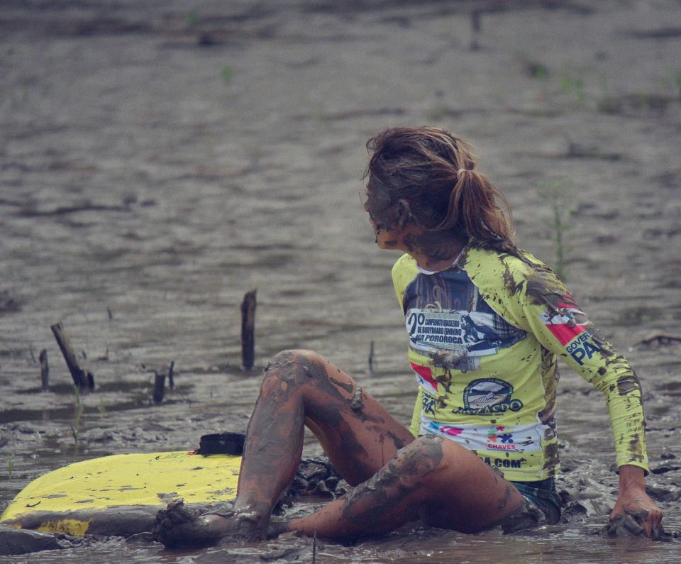

1 min 30 seg de leitura
A bodyboarder Xandinha Ereiro provou mais uma vez que também existe onda perfeita fora da praia.
Entre os dias 19 e 25 de março, sobre um foguete do mestre Kung, ela dropou com categoria na Pororoca de São Domingos do Campim, no Pará, Região Norte, acompanhada de mais de outros 50 atletas, não só do Bodyboard.
Juntos e sob uma adrenalina indescritível, bateram o récorde brasileiro de maior número de pessoas pegando a mesma onde de Pororoca.
Dá uma olhada no que ela falou pra gente logo depois dessa experiência toda!
O nascimento de uma pororoca é como o nascimento dos meus filhos. Até hoje não vi algo mais bonito, conta Xandinha com toda a certeza do mundo. É o encontro da força do mar e do rio, que te puxam de um lado para o outro. .
Desde quando você vê a espuma branca vindo no horizonte, o coração já acelera com tudo.
A gente tem que estudar muito bem as circunstâncias desse encontro, antes mesmo de entrar na água.
É preciso preparo psicológico para encarar. Estar ali, prestes a se arriscar, ouvindo aquele barulho alto, sem saber se o que te espera é uma onda de cinco metros ou um metrinho… é irado!”
Segundo ela, o fenômeno proporciona ao bodyboarder sensações incomparáveis.
É o perigo, a satisfação, o desejo, medo.
É notar que os animais daquele habitat se assustam porque a pororoca também agride… É pegar onda com boto, ver os pássaros voando, búfalo berrando… Pensar que no rio tem jacaré, cobra, piranha, galhos… Mas vale o risco, porque nunca é igual.
A atleta é uma das embaixadoras da Pororoca no Brasil e uma das principais bodyboarders da Região Norte.
Conheceu o mestre Kung em 2006, quando trabalhava em uma loja de surf no Recreio, Zona Oeste do Rio.
Desde antes mesmo de pegar sua primeira onda, já lia sobre as empreitadas do Kung nas revistas, e seu sonho era conhecê-lo.
Acabei ganhando uma prancha Kung, e até hoje, para encarar a Pororoca, só mesmo os foguetes dele. São todos top de linha e perfeitos para essas condições.
E aí, deu pra imaginar?
“Todos os bodyboarders deviam experimentar”.
É a dica que essa protagonista nos dá. =)
São Domingos Do Capim - Pará/Brasil
Conto com o Co-Patrocínio da Seel. Apoios: Bela Rosa | Kpaloa | Craud.net | Amazon Power | Luxo de Sereia.
Veja Mais. Website: Waves.